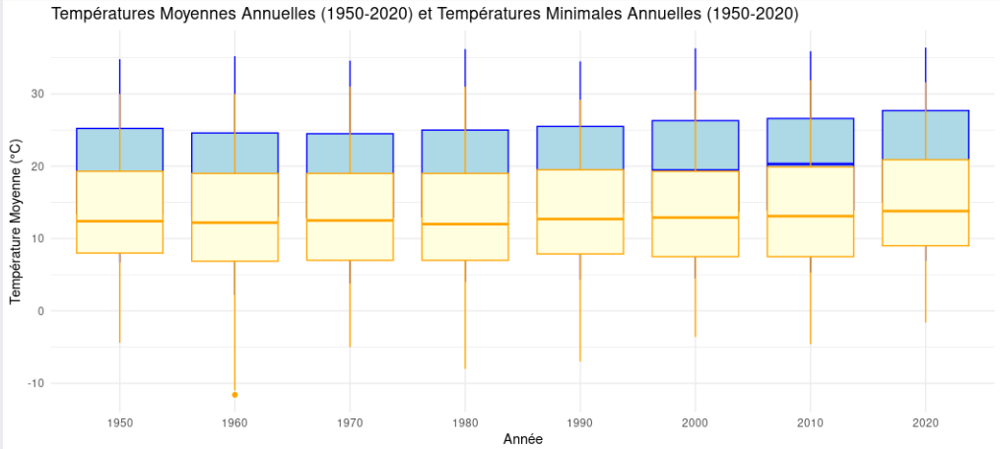

Objectif du projet
Construire une analyse visuelle à partir de données météo, choisir une région et mettre en évidence des résultats clés à l’aide d’indicateurs pertinents.
Contexte
Le concours s’est déroulé sur une journée, en groupe, avec un temps limité pour comprendre les données, choisir un angle d’analyse, produire un rapport et présenter les résultats.
Méthodologie
Compréhension des données
Analyse des données météorologiques mises à disposition afin d’identifier les variables exploitables et les comparaisons les plus pertinentes.
Choix du sujet
Sélection d’une problématique autour de la comparaison climatique entre plusieurs territoires, notamment la Guyane et les Bouches-du-Rhône.
Création des visualisations
Réalisation de graphiques, notamment des boxplots, pour comparer les températures minimales et maximales sur différentes périodes.
Interprétation
Mise en évidence des différences climatiques entre les territoires et explication de leurs impacts sur les environnements et modes de vie.
Outils utilisés
Compétences développées
Résultat obtenu

Le boxplot permet de comparer rapidement la distribution des températures et de mettre en évidence les écarts entre les territoires étudiés.
Cette visualisation rend les différences climatiques plus lisibles et facilite l’interprétation des résultats dans un temps limité.